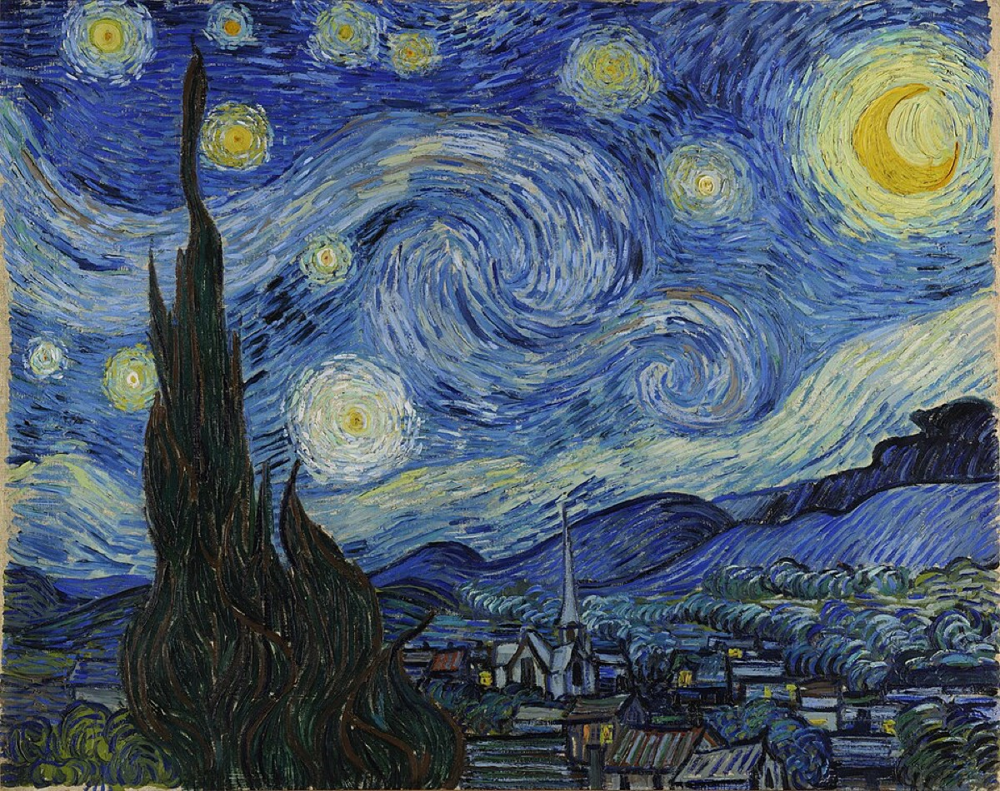
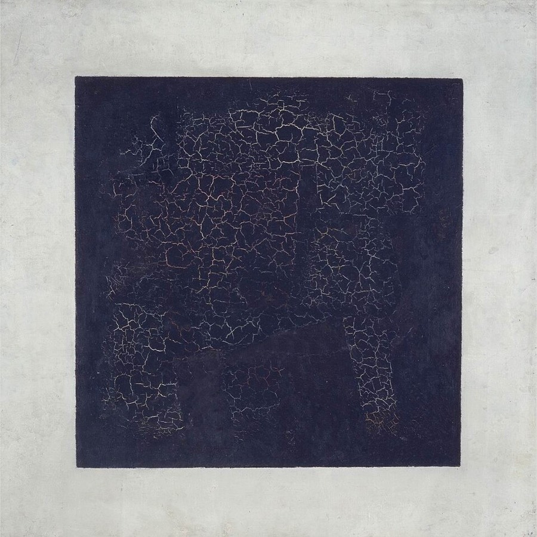
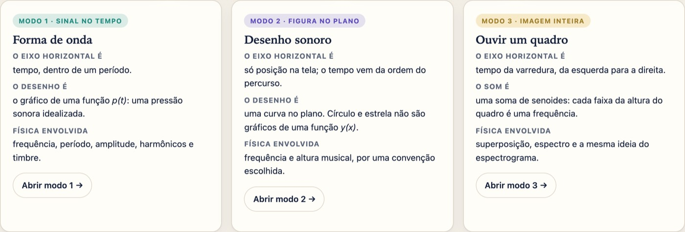
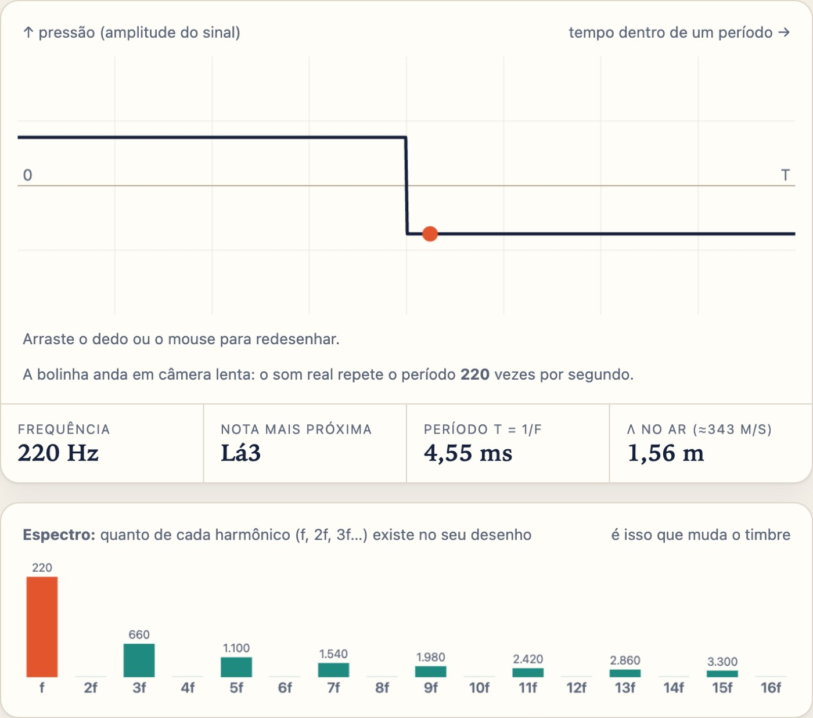
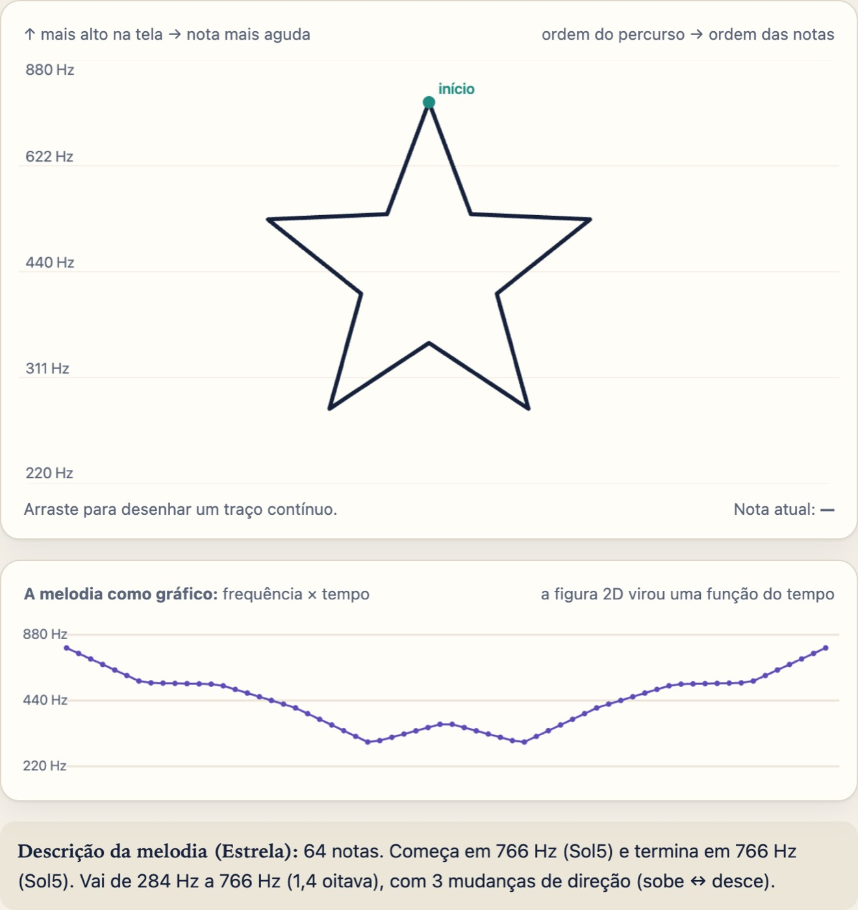
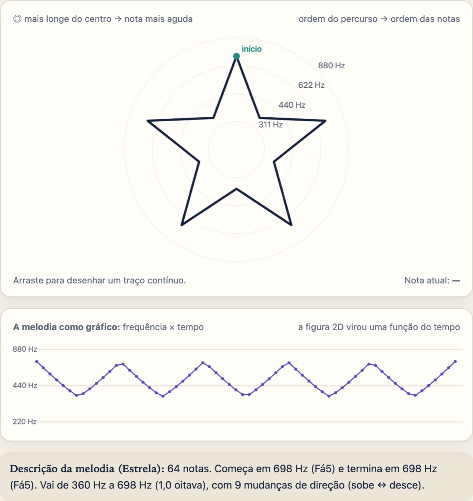
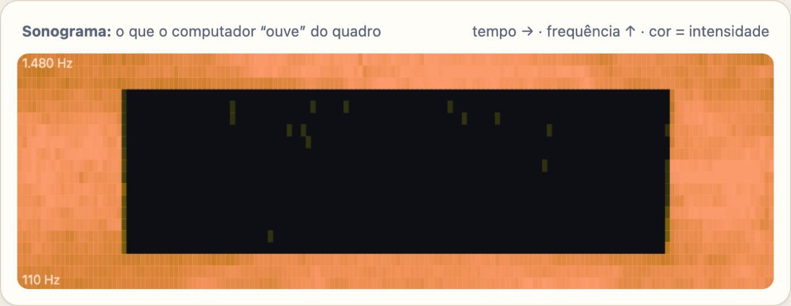
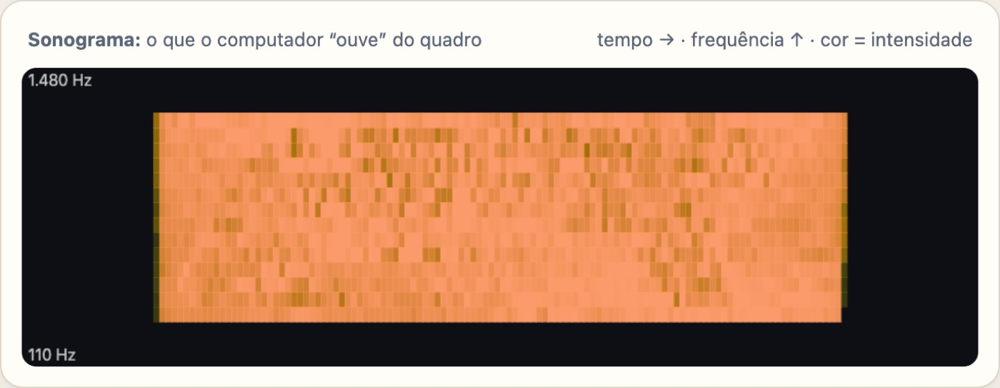

Audiovisual
Mostra uma sequência pronta. O aluno assiste; a ordem e o recorte já foram decididos.
A mesma tela pode treinar cliques, despejar respostas ou ajudar alguém a pensar. O que decide isso é a concepção de ensino, e não o aparelho. Mostramos isso com uma página que transforma desenhos e quadros em som.


Começamos o seminário ouvindo este quadro. Uma linha varre a imagem, e cada faixa de altura vira uma frequência. Depois invertemos a regra, e o mesmo quadro soa outro.
Se o som muda quando muda a regra, então o som não estava no quadro. Uma tecnologia sempre representa algo segundo uma regra escolhida por alguém. Ensinar com TIC é tornar essa regra visível.
São tecnologias digitais para produzir, representar, registrar, comunicar e analisar informação. Nosso recorte é a TIC interativa: o estudante muda uma variável e o sistema devolve uma consequência calculada por um modelo.
Mostra uma sequência pronta. O aluno assiste; a ordem e o recorte já foram decididos.
Calcula respostas a partir de um modelo. O aluno muda variáveis e vê consequências.
Mede o fenômeno real, com ruído e com as limitações do instrumento.
Skinner · ambientalismo (Davis e Oliveira)
Clica, recebe "certo/errado", repete. As "máquinas de ensinar" dos anos 1950 e 60 já eram tecnologia educacional. Aprende-se a acertar o controle.
Freire · educação bancária
O professor projeta e explica; a turma assiste. A tela vira só um quadro mais bonito para "depositar" a resposta.
Vigotski · Mortimer
Pergunta, previsão, teste, explicação. A tela é instrumento e signo, que medeia a relação entre alunos, professor e conceito.
Duas perguntas: as simulações ajudam? E o que os estudantes já pensam sobre o som antes da aula?
Pressão e harmônicos aparecem na tela; dá para variar uma coisa de cada vez, com segurança e baixo custo. A evidência é promissora para a compreensão conceitual (NRC, 2011).
A simulação é um modelo simplificado e pode ser tomada pela própria realidade (Medeiros e Medeiros, 2002). Sem roteiro e mediação, o recurso sozinho não garante aprendizagem (Trentin et al., 2002).
Estudantes tratam o som como um material que sai da fonte e se desloca.
Eshach e Schwartz, Int. J. Sci. Educ. 28(7), 733–764, 2006
Até universitários combinam "entidade" e "onda" num modelo híbrido, que muda conforme a pergunta.
Hrepic, Zollman e Rebello, Phys. Rev. ST PER 6, 020114, 2010
No dia a dia, "alto" quer dizer forte. Na música, quer dizer agudo. Na Física, são grandezas diferentes.
Observação do grupo, a testar com a turma
As ideias prévias não são substituídas: convivem com o conceito científico. Aprender é ampliar o perfil e saber quando cada zona serve.
Uma página feita pelo grupo, que abre no navegador e funciona sem internet. Cada modo usa uma regra diferente e pede uma previsão antes de tocar.


Com a regra "mais alto na tela é mais agudo", a estrela quase não soa "pontuda". Com "mais longe do centro é mais agudo", surgem cinco subidas. A previsão da turma é desmentida (Mortimer, p. 42–44). Mas, como Mortimer insiste, o conflito sozinho não basta (p. 44): o professor precisa oferecer a explicação.


No modo 3, cada instante é a soma de 20 senoides, uma por faixa de altura do quadro. É o princípio do espectrograma, do sistema The vOICe (Meijer, 1992) e das sonificações de imagens da NASA. Invertendo a regra, o centro do Quadrado Negro passa do silêncio ao som mais forte.


"Como transformar um desenho em som? Quem decide?" (Freire)
Cada um escreve o que espera ouvir antes de tocar. (Mortimer)
Grupos testam, trocam a regra e comparam com a previsão. (Vigotski)
f ↔ agudo, A ↔ forte, forma ↔ timbre. O som veio da regra. (Mortimer)
A senoide é idealizada; o som da sala tem eco, ruído e um alto-falante imperfeito.
A regra do modo 3 lê brilho e ignora a cor. Kandinsky ouviria outro quadro.
Sonificar dados astronômicos muda o acesso a eles, dentro de um paradigma.
Som é uma via a mais. A página nunca foi testada com estudantes cegos.
Se o mesmo simulador serve para treinar cliques, transmitir respostas ou construir conceitos, o que, numa aula com TIC, mostraria que houve aprendizagem?
E uma provocação: depois da aula, o aluno continua dizendo "abaixa o som". A TIC falhou?
Abertura com o quadro, (I) definição de TIC e fronteira com o audiovisual. Propôs figuras simples e o tema da acessibilidade.
História da tecnologia educacional, a tese "TIC não é método" e (II) a pesquisa sobre simulações.
(II) Concepções de som e perfil conceitual de "alto"; os limites da tela (Bloco I). Propôs a partícula que percorre o desenho.
(III) Demonstração ao vivo e sequência de aula; (IV) pergunta para o debate. Desenvolveu a página.
ALVES, R. Filosofia da ciência. Brasiliense, 1981, p. 75–88.
BUNGE, M. Filosofia da Física. Edições 70, 1973, p. 11–20.
KUHN, T. A estrutura das revoluções científicas. Perspectiva, 1982.
FREIRE, P. Pedagogia do oprimido. Paz e Terra, 1996, p. 65–115.
DAVIS, C.; OLIVEIRA, Z. Psicologia na educação. Cortez, 1994.
MORTIMER, E. F. Linguagem e formação de conceitos no ensino de ciências. Ed. UFMG, 2000, p. 35–82.
MEDEIROS, A.; MEDEIROS, C. F. Possibilidades e limitações das simulações computacionais no ensino da Física. RBEF, 24(2), 77–86, 2002. doi
NATIONAL RESEARCH COUNCIL. Learning Science Through Computer Games and Simulations. National Academies Press, 2011.
TRENTIN, M. A. S.; PÉREZ, C. A. S.; SANTOS, A. V. A utilização de laboratórios virtuais na melhoria do processo de ensino-aprendizagem, 2002.
ESHACH, H.; SCHWARTZ, J. L. Sound stuff? Naïve materialism in middle-school students' conceptions of sound. Int. J. Sci. Educ., 28(7), 733–764, 2006. doi
HREPIC, Z.; ZOLLMAN, D.; REBELLO, N. S. Identifying students' mental models of sound propagation. Phys. Rev. ST PER, 6, 020114, 2010. doi
SKINNER, B. F. The Technology of Teaching. Appleton-Century-Crofts, 1968.
Imagens das obras: Wikimedia Commons, domínio público. Créditos completos na aba "Física e cuidados" da página.